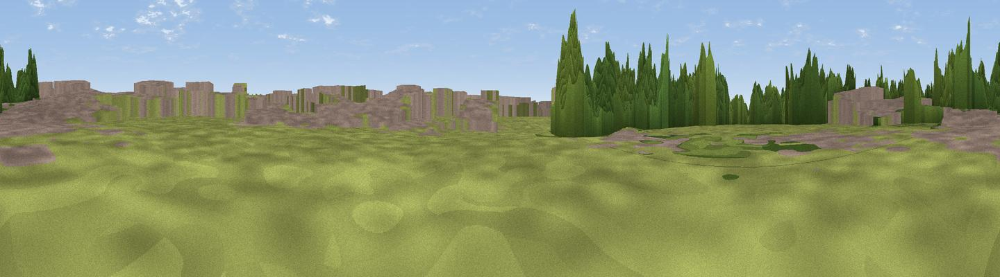

Airliners Live Spotting Location
#42788 in England · top 94% of its area beats it · near RingwayThe view, rendered

A 360° render of this exact spot computed from the terrain model, tree cover and land cover — summer colours, afternoon light, calibrated against photographs of famous viewpoints. Real trees, hedges and buildings will differ in detail.
The panorama
Grey silhouette: terrain skyline in each direction (720 bearings, Earth curvature and refraction included). Dashed green: skyline with trees (+15 m) and buildings (+8 m) as obstacles. Blue strip: how far the ground is visible on each bearing.
Where the view opens
Wedge length = distance to the farthest visible ground on that bearing (vegetation-aware). Rings at 10, 25 and 50 km.
What fills the view
51% grassland · 32% built-up · 15% woodland · 2% cropland ·
Angular shares of the visible panorama (visual magnitude), not map area. Landscape diversity 0.48 (0–1 Shannon).
Key numbers
More beautiful places nearby
The staircase of upgrades: each row has a higher view potential than everything closer. Driving times are estimates from straight-line distance, calibrated against real road routing — check an actual route before setting out.
| Place | Direction | Drive | Score |
|---|---|---|---|
| Castle Hill | WSW · 2 km | ~4 min | 28.7 |
| Viewpoint near Alderley Edge | SE · 7 km | ~15 min | 68.8 |
| Nab Head | ESE · 14 km | ~25 min | 69.6 |
| Viewpoint near Kettleshulme | ESE · 15 km | ~27 min | 70.3 |
| Viewpoint near Compstall | ENE · 16 km | ~28 min | 72.5 |
| Cats Tor | ESE · 20 km | ~34 min | 72.8 |
| Harrop Edge | NE · 21 km | ~35 min | 74.6 |
| Wild Bank | NE · 22 km | ~37 min | 76.2 |
53.35340, -2.28394 · source: osm viewpoint · position refined by local search. Computed location — check access rights before visiting.